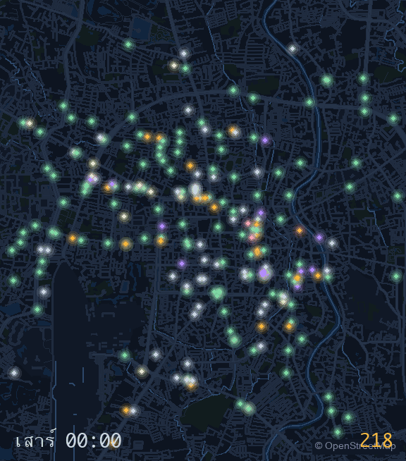

🏮 เมืองหลับนิดหน่อย · The City That Sleeps Nitnoy
ลากเข็มนาฬิกาแล้วดูเมืองตื่น — ทุกดวงคือร้านที่เรารู้เวลาเปิด 2,311 ดวงจากทั้งหมด 12,319 แห่งในสารบัญ กาดเช้าติดก่อนฟ้าสาง คาเฟ่ตามมาแปดโมง บาร์รับช่วงหลังมืด · Drag the clock and watch the city wake — every lamp is a place whose opening hours we hold: 2,311 lamps of 12,319 places in the catalog. The morning kads catch before dawn, the cafés at eight, the bars take over after dark.
วิธีอ่าน: โคมวาดเฉพาะร้านที่สารบัญมีเวลาเปิด (opening_hours จาก OpenStreetMap และเจ้าของร้านยืนยัน) — โคมที่ไม่วาด แปลว่าเราไม่รู้เวลา ไม่ได้แปลว่าปิด · อ่านเวลาไม่ออก 29 ป้าย (นับและเก็บตัวอย่างไว้ใน ไฟล์ข้อมูล ไม่เดา) · กรอบแผนที่คือเขตเมืองที่ถนนถูกเก็บ อีก 992 ดวงอยู่นอกกรอบ นับรวมในตัวเลขแต่ไม่ได้วาด · เวลาเป็นเวลาไทยเสมอ · คำนวณใหม่ทุกครั้งที่สร้างเว็บ · How to read it: a lamp is drawn only for a place whose opening hours the catalog holds (OpenStreetMap opening_hours plus owner-confirmed claims) — an undrawn lamp means we do not know the hours, never that a place is closed. 29 hour strings could not be read (counted and sampled in the data file, not guessed). The frame is the road-crawl area; 992 more lamps burn outside it, counted in the totals but not drawn. All times are Thai time. Recomputed every build.
หนึ่งวันเสาร์ในหกวินาที · One Saturday in six seconds

เมืองกินอะไรตอนไหน · What the city eats when
หมวดที่เปิดรับข้าวเช้า:Serving breakfast: อาหารเช้า (70%) · ร้านกาแฟ (55%) · เค้ก-ขนม (51%) · เบอร์เกอร์ (40%)
เที่ยง · lunchn=489
เที่ยง · lunchเย็น · dinnern=466
เที่ยง · lunchเย็น · dinnern=211
เย็น · dinnerดึก · laten=74
เที่ยง · lunchn=54
เที่ยง · lunchเย็น · dinnern=34
เที่ยง · lunchn=23
เที่ยง · lunchเย็น · dinnern=18
เที่ยง · lunchเย็น · dinnern=16
แยกตามประเภทอาหาร · By cuisine tag
เที่ยง · lunchเย็น · dinnern=218
เที่ยง · lunchn=194
เที่ยง · lunchเย็น · dinnern=34
เที่ยง · lunchเย็น · dinnern=23
เที่ยง · lunchn=22
เที่ยง · lunchเย็น · dinnern=22
เที่ยง · lunchเย็น · dinnern=22
เช้า · breakfastเที่ยง · lunchn=21
เส้นโค้งคือสัดส่วนร้านที่เปิด ณ แต่ละครึ่งชั่วโมง เฉลี่ยทั้งสัปดาห์ — เป็นการอนุมานจากเวลาเปิดของทั้งหมวด ไม่ใช่คำสัญญาของร้านใดร้านหนึ่ง · Each curve is the share of a category open at each half-hour, averaged over the week — an inference about the category's habit, never a promise about one shop.
จังหวะกาด · The market rhythm
กาดเช้า · morning kad
กลางวัน · daytime
กาดแลง · evening
มีเวลาเปิดแค่ 25 จาก 139 ตลาด และจังหวะรายแผงข้างในกาด ไม่มีในข้อมูลเปิดที่ไหนเลย — ต้องเดินเก็บเอง รู้เวลากาดไหนช่วยบอกได้เลย · We hold hours for only 25 of 139 markets, and stall-level rhythm inside a kad exists in no open dataset at all — it has to be walked. If you know a market's hours, tell the ants. 🐜 ขอให้มดไปเก็บ · ask the ants to collect
data/open_lamps.json · 🚶 แผนที่ระยะเดิน · the city at walking pace · 🏪 ใกล้เซเว่นแค่ไหน · how near is the nearest 7-Eleven